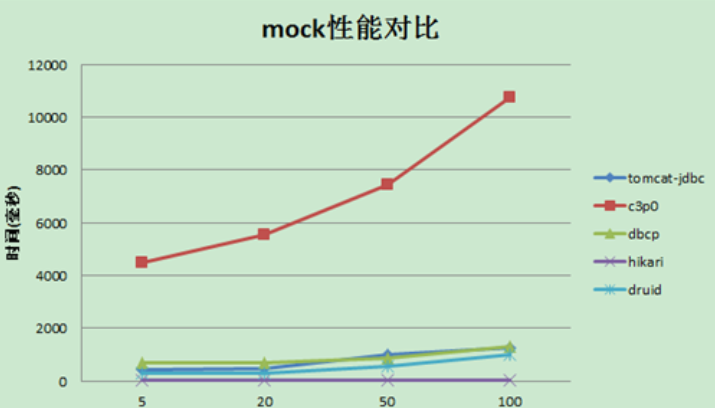

对现有的数据库连接池做调研对比，综合性能，可靠性，稳定性，扩展性等因素选出推荐出最优的数据库连接池 。
NOTE: 本文所有测试均是MySQL库
测试结论
1：性能方面 hikariCP>druid>tomcat-jdbc>dbcp>c3p0 。hikariCP的高性能得益于最大限度的避免锁竞争。
2：druid功能最为全面，sql拦截等功能，统计数据较为全面，具有良好的扩展性。
3：综合性能，扩展性等方面，可考虑使用druid或者hikariCP连接池。
4：可开启prepareStatement缓存，对性能会有大概20%的提升。
功能对比
| 功能 | dbcp | druid | c3p0 | tomcat-jdbc | HikariCP |
|---|---|---|---|---|---|
| 是否支持PSCache | 是 | 是 | 是 | 否 | 否 |
| 监控 | jmx | jmx/log/http | jmx,log | jmx | jmx |
| 扩展性 | 弱 | 好 | 弱 | 弱 | 弱 |
| sql拦截及解析 | 无 | 支持 | 无 | 无 | 无 |
| 代码 | 简单 | 中等 | 复杂 | 简单 | 简单 |
| 更新时间 | 2015.8.6 | 2015.10.10 | 2015.12.09 | 2015.12.3 | |
| 特点 | 依赖于common-pool | 阿里开源，功能全面 | 历史久远，代码逻辑复杂，且不易维护 | 优化力度大，功能简单，起源于boneCP | |
| 连接池管理 | LinkedBlockingDeque | 数组 | FairBlockingQueue | threadlocal+CopyOnWriteArrayList |
- 由于boneCP被hikariCP替代，并且已经不再更新，boneCP没有进行调研。
- proxool网上有评测说在并发较高的情况下会出错，proxool便没有进行调研。
- druid的功能比较全面，且扩展性较好，比较方便对jdbc接口进行监控跟踪等。
- c3p0历史悠久，代码及其复杂，不利于维护。并且存在deadlock的潜在风险。
性能测试
环境配置：
| CPU | Intel(R) Xeon(R) CPU E5-2430 v2 @ 2.50GHz，24core |
|---|---|
| msyql version | 5.5.46 |
| tomcat-jdbc version | 8.0.28 |
| HikariCP version | 2.4.3 |
| c3p0 Version | 0.9.5-pre8 |
| dbcpVersion | 2.0.1 |
| druidVersion | 1.0.5 |
1：获取关闭连接性能测试
测试说明：
初始连接和最小连接均为5，最大连接为20。在borrow和return均不心跳检测
其中打开关闭次数为: 100w次
测试用例和mysql在同一台机器上面，尽量避免io的影响
使用mock和连接mysql在不同线程并发下的响应时间
图形：

mock性能数据 (单位:ms)
| 5 | 20 | 50 | 100 | |
|---|---|---|---|---|
| tomcat-jdbc | 442 | 447 | 1,013 | 1,264 |
| c3p0 | 4,480 | 5,527 | 7,449 | 10,725 |
| dbcp | 676 | 689 | 867 | 1,292 |
| hikari | 38 | 33 | 38 | 30 |
| druid | 291 | 293 | 562 | 985 |
mysql性能数据 (单位:ms)
| 5 | 20 | 50 | 100 | |
|---|---|---|---|---|
| tomcat-jdbc | 436 | 453 | 1,033 | 1,291 |
| c3p0 | 4,378 | 5,726 | 7,975 | 10,948 |
| dbcp | 671 | 679 | 897 | 1,380 |
| hikari | 96 | 82 | 87 | 78 |
| druid | 304 | 424 | 690 | 1,130 |
测试结果：
mock和mysql连接性能表现差不多，主要是由于初始化的时候建立了连接后期不再建立连接，和使用mock连接逻辑一致。
性能表现：hikariCP>druid>tomcat-jdbc>dbcp>c3p0。
hikariCP 的性能及其优异。hikariCP号称java平台最快的数据库连接池。
hikariCP在并发较高的情况下，性能基本上没有下降。
c3p0连接池的性能很差，不建议使用该数据库连接池。
hikariCP性能分析：
- hikariCP通过优化(concurrentBag，fastStatementList )集合来提高并发的读写效率。
- hikariCP使用threadlocal缓存连接及大量使用CAS的机制，最大限度的避免lock。单可能带来cpu使用率的上升。
- 从字节码的维度优化代码。 (default inline threshold for a JVM running the server Hotspot compiler is 35 bytecodes ）让方法尽量在35个字节码一下，来提升jvm的处理效率。
2：查询一条语句性能测试
测试说明：
- 初始连接和最小连接均为8，最大连接为8。在borrow和return均不心跳检测
- 查询的次数为10w次，查询的语句为 1：打开连接 2：执行 ：select 1 3：关闭连接
- 测试用例和mysql在同一台机器上面，尽量避免io的影响
图形：

测试数据：
| 5 | 8 | 20 | 50 | 100 | |
|---|---|---|---|---|---|
| tomcat-jdbc | 2,178 | 1,495 | 1,769 | 1,818 | 1,858 |
| c3p0 | 3,237 | 3,451 | 4,488 | 5,994 | 7,906 |
| dbcp | 2,816 | 1,935 | 2,097 | 2,243 | 2,280 |
| hikari | 2,299 | 1,546 | 1,682 | 1,751 | 1,772 |
| druid | 2,297 | 1,551 | 1,800 | 1,977 | 2,032 |
测试结果：
- 在并发比较少的情况下，每个连接池的响应时间差不多。是由于并发少，基本上没有资源竞争。
- 在并发较高的情况下，随着并发的升高，hikariCP响应时间基本上没有变动。
- c3p0随着并发的提高，性能急剧下降。
3：pscache性能对比
测试说明：
通过druid进行设置pscache和不设置pscache的性能对比
初始连接和最小连接均为8，最大连接为8。在borrow和return均不心跳检测。并且执行的并发数为8.
查询10w次。查询流程为：1：建立连接，2：循环查询preparestatement语句 3：close连接
测试用例和mysql在同一台机器上面，尽量避免io的影响
测试数据：
| cache | 1,927 |
|---|---|
| not cache | 2,134 |
测试结果：
- 开启psCache缓存,性能大概有20%幅度的提升。可考虑开启pscache.
测试说明：
- psCache是connection私有的，所以不存在线程竞争的问题，开启pscache不会存在竞争的性能损耗。
- psCache的key为prepare执行的sql和catalog等，value对应的为prepareStatement对象。开启缓存主要是减少了解析sql的开销。